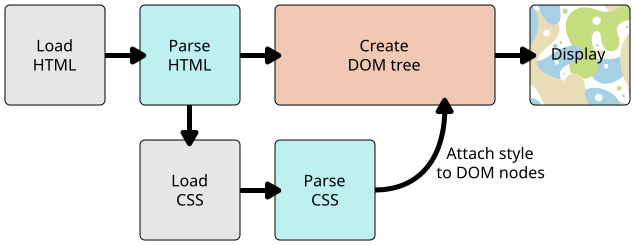

Learn-第一步
1 什么是 CSS¶
- 标记语言：HTML / SVG / XML (包含 XML 方言如 SVG, MathML 或 XHTML)
2 CSS 入门¶
链接 styles.css 到 index.html 的 <head>
<link rel="stylesheet" href="styles.css">
改变元素的默认行为
<ul>, 不要 list bullets
li {
list-style-type: none;
}
根据元素在文档中的位置(location)加样式
-
只选择嵌套在 <li> 元素内 (后代) 的 任何 <em>， 使用一个称为包含选择符 (descendant combinator) 的选择器
li em { color: rebeccapurple; } -
直接出现在标题后面并且与标题具有相同层级的段落，加样式。需在两个选择器之间添加一个 + 号 (成为 相邻选择符, adjacent sibling combinator)
h1 + p { font-size: 200%; }
根据状态 (state) 加样式
-
unvisited links pink and visited links green.
a:link { color: pink; } a:visited { color: green; } -
being hovered over：删除下划线
a:hover { text-decoration: none; }
Combining selectors and combinators
-
you can combine multiple selectors and combinators together
/* selects any <span> that is inside a <p>, which is inside an <article> */ article p span { ... } /* selects any <p> that comes directly after a <ul>, which comes directly after an <h1> */ h1 + ul + p { ... } -
You can combine multiple types together, too.
/* This will style any element with a class of special, which is inside a <p>, which comes just after an <h1>, which is inside a <body> */ body h1 + p .special { color: yellow; background-color: black; padding: 5px; }
3 CSS 的结构¶
将CSS应用于文档的三种方法：
- 使用外部样式表 (with an external stylesheet)
-
内部样式表 (with an internal stylesheet)
<head> 里的 <style>
例如，也许您正在使用内容管理系统，在该系统中，您无法修改外部CSS文件。
但是，对于具有多个页面的网站，内部样式表将成为效率较低的工作方式。
-
内联样式 (with inline styles)
styleattribute尽可能避免以这种方式使用CSS
级联和特定性 (cascade and specificity)
CSS语言有规则来控制发生冲突时哪个选择器更强。
这些规则称为级联和特定性(cascade and specificity)。
- 当应用的两个规则有相等的 specificity，后一个将会使用。这是级联规则 (cascade rule)
-
class selector 和 element selector 之间存在冲突，class 获胜
class 被评为具有更高的特定性
有时，CSS可能无法按您预期的那样应用
因为样式表中的其他内容更具特定性。
解决此类问题的第一步是认识到一个元素可以应用多个规则。
-
Properties and values
重要： CSS属性和值区分大小写。每对中的属性和值都用冒号分隔。（:）
函数
尽管大多数值是相对简单的关键字(keywords)或数字值，但有些值采用函数形式。
calc()函数就是一个例子，该函数可以在CSS中执行简单的数学运算
<div class="outer"><div class="box">The inner box is 90% - 30px.</div></div>.outer { border: 5px solid black; } .box { padding: 10px; width: calc(90% - 30px); background-color: rebeccapurple; color: white; }另一个例子是 transform 的不同值, 例如 rotate().
<div class="box"></div>.box { margin: 30px; width: 100px; height: 100px; background-color: rebeccapurple; transform: rotate(0.8turn) }
@rules
CSS @rules 提供了 CSS 应该如何执行 或 如何反应 的指令 (instruction)。
有些@rules简单，只需一个关键字和一个值。 例如，@import 将样式表导入另一个CSS样式表：
@import 'styles2.css';
一个常见的 @rule 是 @media, 用来创建媒体查询 (create media queries)
媒体查询使用 条件逻辑 来应用 CSS 样式。
body {
background-color: pink;
}
/* if the browser viewport is wider than 30em. */
@media (min-width: 30em) {
body {
background-color: blue;
}
}
Shorthands (速记)
一些属性(properties)，如
- font，
- background，
- padding，
- border，和
- margin
被称为速记属性 (shorthand properties)。这是因为速记属性在一行中设置了多个值。
background: red url(bg-graphic.png) 10px 10px repeat-x fixed;
等价于
background-color: red;
background-image: url(bg-graphic.png);
background-position: 10px 10px;
background-repeat: repeat-x;
background-attachment: fixed;
Warning: 使用 CSS 速记的一个较不明显的方面是省略的值如何重置。
CSS 速记中未指定的值将恢复为其初始值。这意味着 CSS 速记中的省略 (omission) 可以覆盖 (override) 先前设置的值。
White space (空格)
White space means
- actual spaces,
- tabs (制表符) and
- new lines (换行符)
就像浏览器忽略HTML中的空白一样，浏览器也忽略CSS内部的空白。
空白的价值在于它如何提高可读性。
4 CSS 如何工作¶
浏览器显示文档时，必须将文档的内容与其样式信息结合在一起。
请记住，这是浏览器加载网页的简化版本，并且不同的浏览器将以不同的方式处理该过程。但大致如此。
- 浏览器加载 HTML（例如，从网络接收 HTML ）。
- 它将 HTML 转换为 DOM (Document Object Model)。DOM 表示计算机内存中的文档。
- 然后，浏览器将获取 HTML 文档链接到的大多数资源，例如: 嵌入式图像和视频……以及链接的 CSS ！JavaScript则会稍后进行处理，现在不讲
- 浏览器解析获取的 CSS ，并根据选择器类型将不同规则分到不同的 "bucket"(桶) 中，例如 element, class, ID 等。根据找到的选择器，它确定应将哪些规则应用于DOM中的哪些节点，并根据需要给它们附加样式（这个中间步骤称为渲染树, a render tree）。
- 上述的规则应用于 DOM 节点之后，渲染树会依照应该出现的结构进行布局。(The render tree is laid out in the structure it should appear in after the rules have been applied to it.)
- 页面显示在屏幕上（这个阶段称为绘画 painting）。

关于 DOM
DOM 具有树状结构。标记语言中的 每个 element, attribute, and piece of text (一段文本) 都成为树结构中的 一个 DOM 节点。节点由它们与其他 DOM 节点的关系定义。Some elements are parents of child nodes, and child nodes have siblings （同级节点）.
DOM 可以帮助你设计，调试和维护 CSS，因为 DOM 是 CSS 与 文档内容 结合的地方。当你开始使用浏览器 DevTools 时，将在选择项目时浏览 DOM，以查看使用了哪些规则。
Note
<p>
Let's use:
<span>Cascading</span>
<span>Style</span>
<span>Sheets</span>
</p>
// DOM
P
├─ "Let's use:"
├─ SPAN
| └─ "Cascading"
├─ SPAN
| └─ "Style"
└─ SPAN
└─ "Sheets"
将CSS应用于DOM
span {
border: 1px solid black;
background-color: lime;
}
The browser will parse the HTML and create a DOM from it, then parse the CSS
如果浏览器遇到无法理解的 CSS 选择器或声明，它将忽略并继续执行后面的规则。
可以使用新的CSS作为增强功能
再加上 级联 (cascade) 规则，如果浏览器不支持新 CSS，可以提供 替代的选择 (alternative)
/* 例如，某些较旧的浏览器不支持calc()作为值。 */
.box {
/* 备用宽度 */
width: 500px;
width: calc(100% - 50px);
}